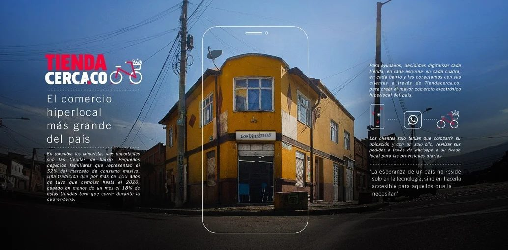
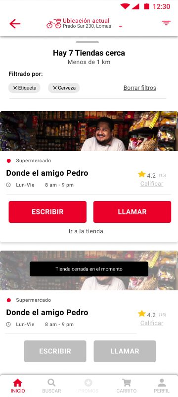
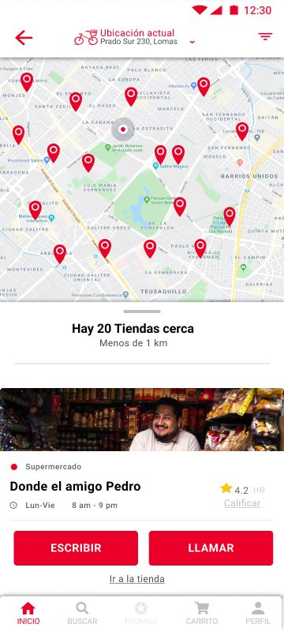
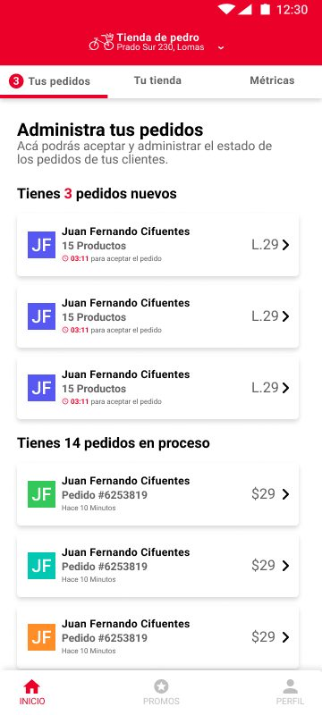
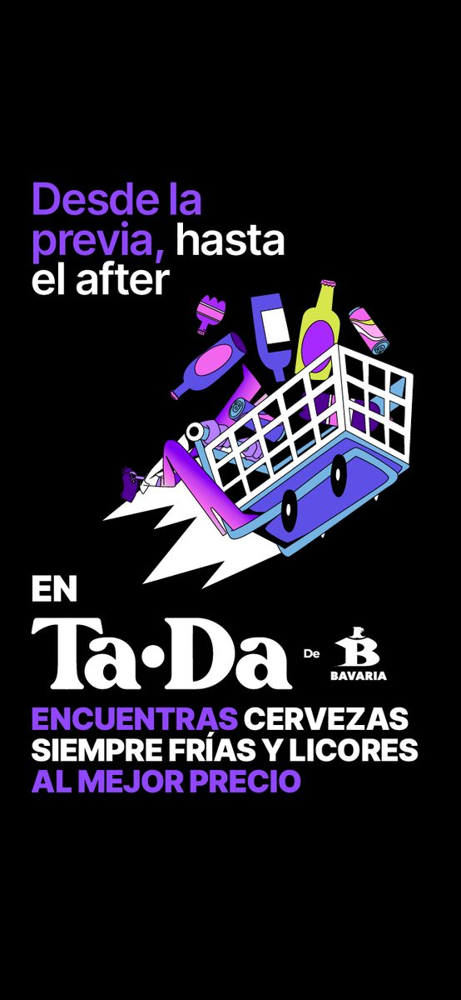
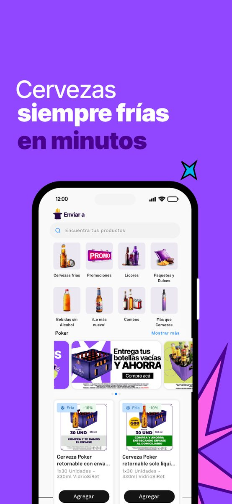

The neighborhood
store goes digital
How I designed the MVP that sparked a Cannes Grand Prix, and then built an entire delivery platform from scratch for a new market.

At a glance
- The problem: COVID-19 shut down foot traffic overnight. Hundreds of thousands of small neighborhood shops, the backbone of Latin American commerce, had no way to reach their customers remotely
- My role: Sr. UX Designer at Bavaria's Digital Marketing team. I built the MVP of Tienda Cerca, then led the full design of Heladas Express for El Salvador
- The approach: Sprint-based design, geolocation-first, adapted to each market's context and branding
- The outcome: A platform that won a Cannes Grand Prix, reached 9 countries, and evolved into multiple regional products still running today
The context
In March 2020, Colombia went into one of the strictest lockdowns in Latin America. For millions of people, the tienda de barrio, the corner grocery store, was the lifeline for daily essentials. But overnight, social distancing made those visits impossible.
Bavaria, part of AB InBev's Latin American operations, saw an opportunity to act fast: give those neighborhood stores a digital presence so they could keep operating through delivery, and give consumers a way to find their nearest store without leaving home.
I was the Sr. UX Designer embedded in Bavaria's Digital Marketing team, working alongside DraftLine, AB InBev's in-house creative studio, to design the platform from the ground up.
The corner store has always been there for the neighborhood. We needed to make sure the neighborhood could still find it.
Building the MVP
The core challenge was deceptively simple: load a database of neighborhood stores onto a city map, so that buyers could find the stores near them and request home delivery.
In practice, it required solving several UX problems at once:
- Geolocation first: The experience had to start from where the user actually was. We used the device's location to surface only the relevant stores, no search needed, no friction
- Two sides of one product: Buyers needed to find stores quickly. Store owners needed to register and manage their digital presence. Both flows had to be simple enough to work for people with limited digital experience
- Speed over perfection: We launched the MVP in weeks, not months. Sprint-based design meant shipping fast, learning from real users, and iterating. The map was live before the UI was polished
- WhatsApp as the transaction layer: Rather than building a full checkout, the MVP connected buyers directly to stores via WhatsApp. This removed technical barriers for store owners while keeping the experience familiar

Home: lista de tiendas cerca de ti

Map view: encuentra tu tienda más cercana

Seller profile: contacta directo por WhatsApp
The impact
Tienda Cerca launched on March 28, 2020, less than two weeks after Colombia's national lockdown. In its first month, the platform received over 10 million visits.
across Latin America
was deployed
in Colombia alone
In 2021, Tienda Cerca was awarded the Grand Prix at Cannes Lions in the Creative eCommerce category, the first Grand Prix ever won by a Colombian initiative at the festival. The jury recognized it not just as a creative campaign, but as a genuine business and social solution: a product that kept economies running during a crisis.
Taking it to El Salvador
After the success of Tienda Cerca in Colombia, AB InBev's regional strategy was to replicate and adapt the model across other Latin American markets. I was responsible for designing the entire platform for El Salvador, operated by La Constancia, AB InBev's local subsidiary.
The brief was clear: same concept, different context. El Salvador had different consumer habits, a different brand portfolio, and a completely new visual identity to build around.
What changed
- Brand new identity: "Heladas Express", centered on the promise of cold, ready-to-drink beers delivered fast. The brand had its own color system, typography, and tone distinct from Tienda Cerca
- Product-first catalog: Unlike Tienda Cerca's store-finder model, Heladas Express led with a product catalog, users browsed beverages first, then the platform connected them to the nearest store
- Cold guarantee: A core UX promise: beers arrive chilled and ready to drink. This required clear messaging at every step of the order flow
- Sprint-based execution: The entire platform, from login to checkout confirmation, was designed and shipped in sprint cycles, iterating in close collaboration with engineering and local business stakeholders

Screen 2: Delivery address
Map-based address selection with geolocation. The same core pattern from Tienda Cerca, adapted for the new brand.

Screen 3: Home
Product catalog front and center. Featured promos and the "cold guarantee" banner anchor the experience.

Screen 4: Product detail
Clear product info, price, and quantity selector. Designed for speed, most users know what they want.

Screen 5: Confirmation
The cold guarantee is reinforced at checkout. Clear delivery time, order summary, and reassurance close the loop.
Use arrows or keyboard ← → to navigate
From MVP to ecosystem
What started as an emergency response to a pandemic became a platform strategy that AB InBev replicated across the continent. Each market adapted the core model to its own context.
March 2020, Colombia
Tienda Cerca MVP
Map-based store finder. Geolocation + WhatsApp as the delivery engine. Launched in under two weeks from the national lockdown announcement.
2021, El Salvador
Heladas Express
Full platform redesign for the Salvadoran market. New brand, product-first catalog model, cold guarantee, and end-to-end checkout flow, designed and shipped by sprints.
2021, Cannes Lions
Grand Prix · Creative eCommerce
Tienda Cerca awarded the highest honor at Cannes Lions 2021. First Grand Prix for Colombia in the festival's history. Recognized as both a creative and social impact initiative.
Onwards
TaDa Delivery & beyond
Heladas Express evolved into TaDa Delivery, a full-featured beverage delivery app now operating across multiple AB InBev markets. The platform architecture and UX foundations built in those early sprints are still running today.


What I learned
Speed and quality aren't opposites. The MVP launched in weeks, but it worked because we made deliberate decisions about what to simplify. We didn't cut UX quality, we cut scope. WhatsApp instead of a checkout. A map instead of a search index. Every constraint became a design decision.
Context changes everything. Tienda Cerca and Heladas Express shared the same idea, but they were different products. Building for El Salvador meant understanding a different consumer culture, a different brand promise, and a different regulatory environment. Copy, tone, and visual hierarchy all had to shift.
Sprint culture is a design superpower when used right. Working in sprints forced us to ship, get feedback, and adapt. There's no perfect version one. The version that launched was better than any prototype we could have polished in isolation for six months.
Design at scale starts with a single flow. The map view. The store registration form. The WhatsApp handoff. Those three flows from the MVP became the foundation for a platform that now connects hundreds of thousands of stores. Getting them right, simple, fast, clear, was the whole job.